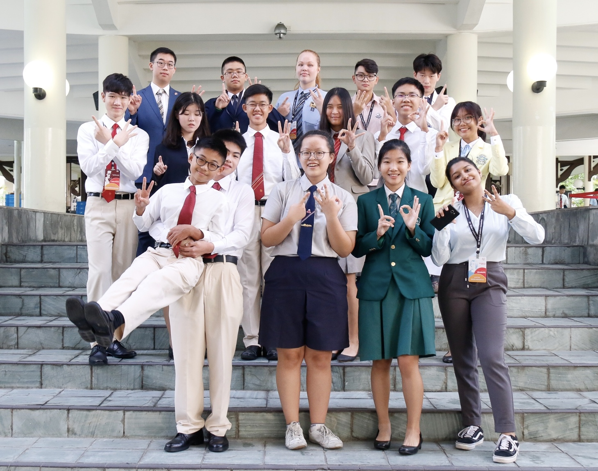

Youth Faculty 13: Academic Climate
Under Youth Assembly 5: School Climate
Hello everyone! We are Youth Faculty 13 — Locke, and our topic of discussion is Academic Climate. This refers to the academic environment comprising teaching and learning practices, stress levels and academic competition in schools.
Due to an increasing focus on academic education in recent years, there are higher stress levels and unhealthy competition amongst students mainly caused by factors such as familial and peer pressure. A negative academic climate can potentially damage the psychological, mental and physical health of students.
Some solutions we have identified as a team would include the removal of mid-year examinations, integrating more of the arts into school curriculum and incorporating technology into classrooms.
The Lens
Here is our Lens Video where we presented various aspects such as the causes, implications and solutions for academic climate through a news broadcast!
Exhibition
During the exhibition, we presented our research and knowledge on boards to help others better understand our topic and its significance
(here we would include your exhibition boards, hopefully you left it in ops room)
THANK YOU
although SLC only lasted for a few days, it has been nothing short of amazing and it was a truly enjoyable experience for all of us :-) huge shoutout to everyone in our yf for being so kind and cooperative with one another, our lovely facils for being so sweet and supportive, as well as the organising team for running the entire event so smoothly! all the memories we have forged will definitely be held close to our hearts <3